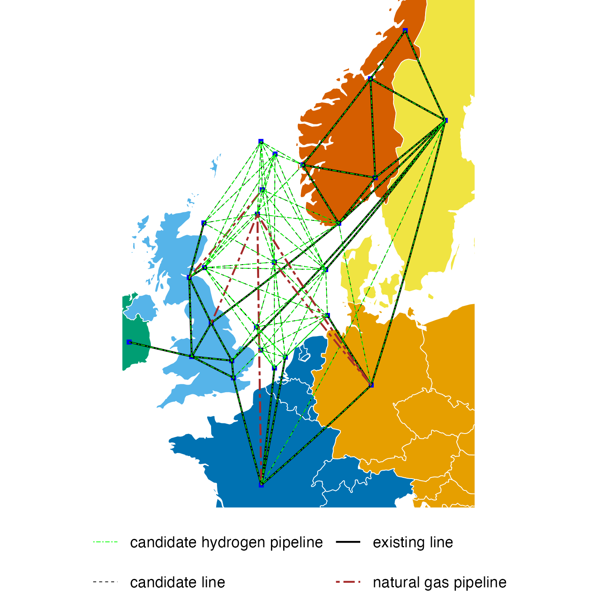
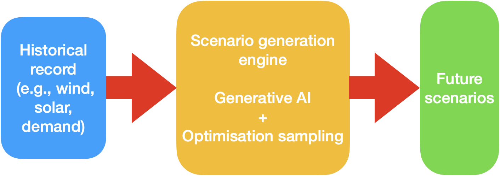

We build optimisation and AI models, algorithms and decision-support tools that treat uncertainty as a first-class input — so energy planning and investment decisions are robust and transparent across every timescale and energy carrier.
Built for decisions that can't wait for certainty.
Model at scale
Large-scale, multi-energy systems modelled under uncertainty across multiple timescales.
Quantify risk
Investment and operational risk made explicit, measurable and comparable.
Generate scenarios
Uncertainty scenarios generated and evaluated across multiple time horizons.
Plan across horizons
Short-term operations and long-term planning, integrated in a single decision framework.
One platform, from scenarios to decisions.
Advanced optimisation and AI methods with explicit representations of uncertainty — operating at scale across energy carriers, geographic regions and decision timescales.
Multi-energy, multi-scale modelling
Pan-European scope. Power, heat, hydrogen, oil & gas and CCS in one integrated model.

Algorithms beyond solver limits
Proprietary optimisation and neural-network-enhanced algorithms solve problems commercial solvers can't.
Scenario generation
Data-driven and optimisation-based scenarios, from historical data to user-defined futures.

A user-focused platform
Integrated data management, model configuration and results analysis — built for analysts and decision-makers.
Data analytics
- Time series scenario generation
- Long-term commodity, policy, and technology scenario generation
- European energy system database
Algorithms
A toolbox of fast AI- and optimisation-based algorithms
Models
- Long-term and short-term uncertainty
- Integrated investment, retrofit and abandonment planning with operational scheduling
- Pan-European multi-energy system: power, oil and natural gas, hydrogen
- North Sea offshore system: offshore wind, O&G platforms, pipelines
Results analytics
- Long-term power prices analytics
- Energy infrastructure pathways analysis
- Energy asset valuation
- Uncertainty analytics
See your energy systemunder uncertainty.
Get a walkthrough of the EORC platform on a problem that looks like yours.